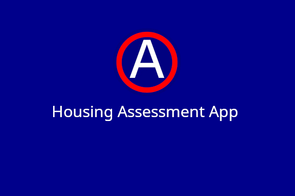
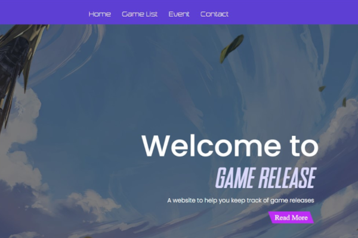

Hello! My name is Jen.
I'm currently a front-end developer.
About Me
I'm a junior front-end developer from Lexington, SC! My interest in front-end development started when I took a course at my university in 2021. My first ever website allows me to express my artistic skill and improve an user experience. The project also taught me a lot about the web!
Once front-end sparked my interest, I continue to hone my craft as a developer by building projects that focuses on responsiveness and streamlining user experience! I have interned for BlueCross BlueShield SC and created a website for the U.S. Shawbase Airforce army that allows me to expand my skills as a developer.
In my free time, I enjoy cooking delicious desserts (my favorite is cheesecake) and play video games. Other times, I love to learn new front-end techniques to add to my own website!
My current skills expertise:
- HTML5/CSS3
- React
- JavaScript (ES6)
- Jenkins
- Docker
- Sonarqube
Work Experiences
- UserTesting
- BlueCross BlueShield SC
Independent Tester
August 2018 – Present
- Performed over 150 software and products front-end test for many companies.
- Self-paced environment that requires time management and attention to detail to give concise feedback.
- Communication skills with customers are critical to demonstrate knowledge of products’ capabilities and limitations.
- Received the highest performance rating (5 stars) from customers.
Featured Projects

Front-end side of a full-stack web form filling application for the Shaw Airforce Base army. The website allow user to fill and manage housing application.
A productivity application that allows user to stay productive with features like pomodoro, checklist, and notes taking.

My first ever website, Game Release, that simulates a gaming news website for user to keep track of game releases and events.
Get In Touch
I'm currently open to front-end or web development positions!
Please feel free to reach out to me regarding opportunities, feedback, or questions.
Please feel free to reach out to me regarding opportunities, feedback, or questions.